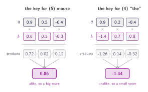
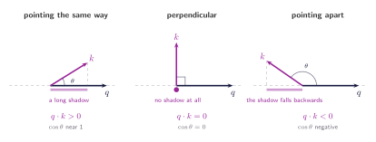
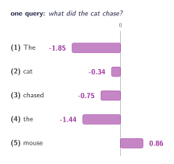

03 · Queries, Keys, and Values
Measuring Similarity
Dot products, projections, and what it actually means for a key to match a query.
Two vectors in, one number out
Here is the entire requirement. Two vectors go in, one number comes out. That number should indicate how similar the vectors are, or how different they are. There's one operation that already does that for us. By multiplying two vectors element by element and adding up the results, we have the dot product.
Before we look at any numbers, let's be clear about which two vectors these are. The query $q$ is the request itself, the numeric form of what did the cat chase?
The key $k$ belongs to one single word, and it's whatever makes that word findable. So there is one query and one key per word, which means this multiply-and-add happens once for every word in the sentence, giving each word its own score. Where those numbers actually come from is section 06. For now, assume someone hands them to us.

Let's now define this operation more formally:
where $d$ is the number of entries in each vector, three in the figure above. Both vectors have to be the same length for this to work at all, which is why every query and every key in a model share one dimension.
Why that number means similarity
So we said that we have to multiply and add to get a number which I told you measures similarity. But nothing we have written down says why that sum should have anything to do with similarity. For all we know it is an arbitrary rule that happens to produce different numbers for different inputs. Is this considered similarity?
It is not arbitrary, and there is a second way of writing the dot product that shows why:
where $\lVert q \rVert$ and $\lVert k \rVert$ are the lengths of the two vectors and $\theta$ is the angle between them. The same number as before, computed a completely different way, and now, interestingly, we can see geometrically why it makes sense.
Everything follows from the $\cos\theta$. Two vectors pointing the same way have $\theta = 0$ and $\cos\theta = 1$, the largest it ever gets. Turn one of them until they sit perpendicular to one another and $\cos\theta = 0$, so the dot product vanishes no matter how long the vectors are. Keep turning until they point in opposite directions and $\cos\theta = -1$, which is where negative scores come from.

One query, five scores
So far we have only compared the query against two keys, and one at a time. The model doesn't work that way. It takes the one query and runs the same dot product against every key in the sentence, so five words give five numbers, one per word. That list is what the model is really after: which word scores highest, and which scores lowest.
Those five numbers, one for each word in the sentence the cat chased the mouse, are not yet weights. They do not add up to anything in particular. Some of them are negative, and nothing stops one of them being a number like 12 or 24, while the others can sit near zero. We cannot blend five values in proportion to a list like that, because in proportion to has no meaning until the numbers are all positive and add up to one.

There's a second problem hiding in the size of these numbers. Our vectors hold three numbers each, so a score is a sum of three products, and it stays small. Real models use 64 or more, and a sum of 64 products is a far bigger number than a sum of three. The scores grow with the dimension, purely because there are more terms in the sum, and that turns out to cause real trouble when we try to turn them into weights.